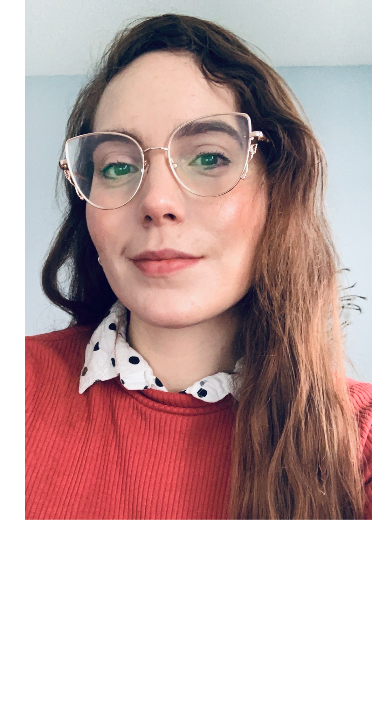

Meet Marina.
I extensively use design research to look, understand, and build a a more creative, user intutiave solution. I thoroughly enjoy writing my thoughts down and sketching as my own canvas to create multiple solutions. Working on complex problems helps me fufill my passion in helping others and creating a difference in people's lives.When I am not designing or doing research, I enjoy exercising and cooking. I also enjoy drawing, writing poetry or reading/learning new things! Thank you for visiting my page, I've been coding it myself so it's still a work in progress!

A self project
We were asked to design a poster and a 6 panel box that would tell a story about ourselves in am abstract, visual form. Mine tells the story of my quirky personality, I am a thinker and how I am a poet, designer, I am passionate about health and fitness, and it all ties in together following the lines.